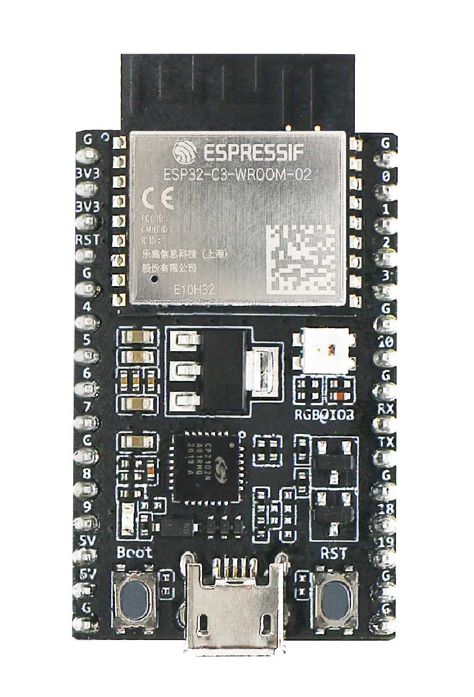
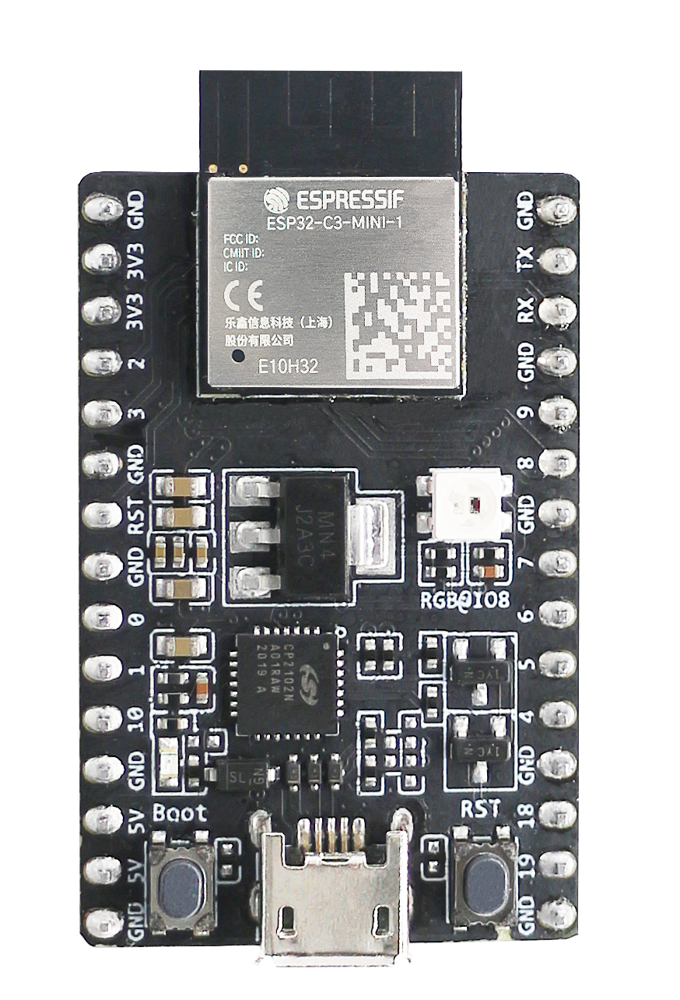

ESP32-C3 DevKit¶
The ESP32-C3 DevKit is an entry-level development board equipped with either an ESP32-C3-WROOM-02 or an ESP32-C3-MINI-1. ESP32-C3-WROOM-02 and ESP32-C3-MINI-1 are SoMs based on the RISC-V ESP32-C3 CPU.
Most of the I/O pins are broken out to the pin headers on both sides for easy interfacing. Developers can either connect peripherals with jumper wires or mount ESP32-C3 DevKit on a breadboard.

ESP32-C3-DevKitC-02¶ |

ESP32-C3-DevKitM-1¶ |
Buttons and LEDs¶
Buttons¶
There are two buttons labeled Boot and RST. The RST button is not available to software. It pulls the chip enable line that doubles as a reset line.
The BOOT button is connected to IO9. On reset it is used as a strapping pin to determine whether the chip boots normally or into the serial bootloader. After reset, however, the BOOT button can be used for software input.
LEDs¶
There is one on-board LED that indicates the presence of power. Another WS2812 LED is connected to GPIO8 and is available for software.
Configurations¶
nsh¶
Basic configuration to run the NuttShell (nsh).
gpio¶
This is a test for the GPIO driver. It uses GPIO1 and GPIO2 as outputs and GPIO9 as an interrupt pin.
At the nsh, we can turn the outputs on and off with the following:
nsh> gpio -o 1 /dev/gpout0
nsh> gpio -o 1 /dev/gpout1
nsh> gpio -o 0 /dev/gpout0
nsh> gpio -o 0 /dev/gpout1
We can use the interrupt pin to send a signal when the interrupt fires:
nsh> gpio -w 14 /dev/gpint2
The pin is configured as a rising edge interrupt, so after issuing the above command, connect it to 3.3V.
watchdog¶
This configuration tests the watchdog timers. It includes the 2 MWDTS, adds driver support, registers the WDTs as devices and includes the watchdog example application.
To test it, just run the following command:
nsh> wdog -i /dev/watchdogX
Where X is the watchdog instance.
watcher¶
This configuration tests the watchdog timers in the capture mode. It includes the 2 MWDTS, adds driver support, registers the WDTs as devices and includes the watcher and watched example applications.
To test it, just run the following command:
nsh> watcher
nsh> watched